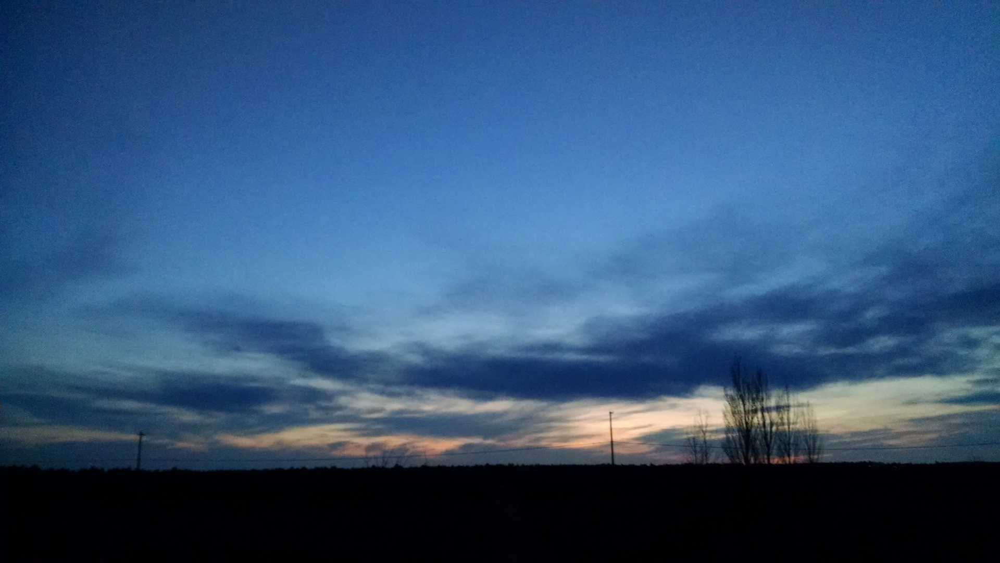

When other systems go down, Spokane County still has a voice.
We’re licensed amateur radio volunteers who back up Spokane County Emergency Management’s communications. When phones, power or the internet fail, we pass messages by voice and radio email.
Represent an agency? How we work with agencies
What we do
- County emergenciesThe radio room and communications trailer, when the county activates us.
- HospitalsBackup radio equipment, kept working.
- Severe weatherSKYWARN spotting for the National Weather Service.
- Community eventsBloomsday, fun runs and bike races.
Come visit
From home: listen to the Tuesday net, 8:00 PM, 147.300 MHz, on any scanner or 2-meter radio. No license needed.
In person at Spokane County Emergency Management, 1121 W Gardner Ave, Spokane:
- Second Saturday Workshop, 9:00 AM–noon, then a Winlink workshop, 12:30–3:30 PMNext: Sat, Oct 10
- Third Thursday training meeting, eveningsNext: Thu, Oct 15
Join in four steps
-
Step 2: Get connected
Check into the Tuesday net. Apply to join our groups.io list (opens groups.io), the members’ hub for files and the calendar; a moderator approves you.
-
Step 3: Qualify for ACS
OptionalA county application and background check.
What ACS asks: one net check-in a month, one meeting or workshop a quarter, one field operation a year, plus four free FEMA courses and ARRL Basic EmComm in year one.